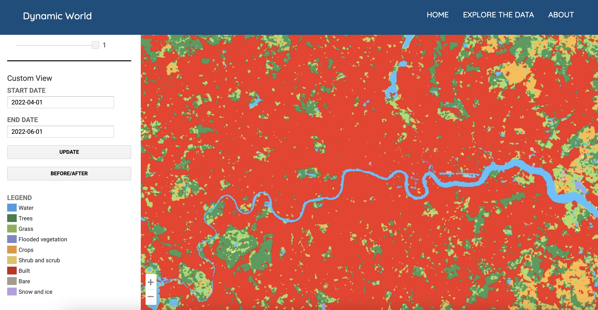
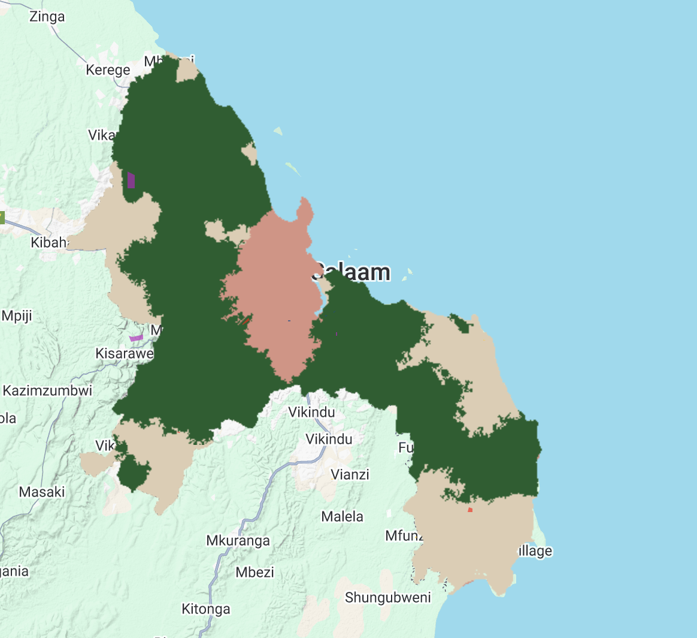
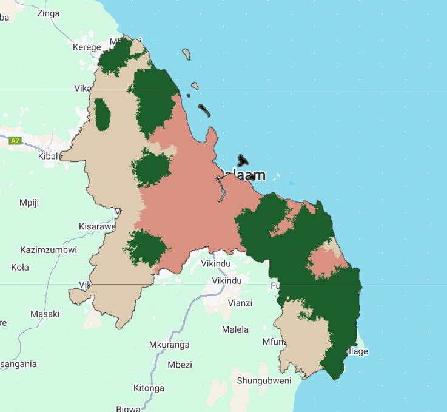

7 Classiciation II
7.1 Summary
This week, we had our second lecture covering classification. We first looked at some pre-classified data sources to consider their advantages and limitations. One example discussed was Dynamic World, which provides near real-time, 10m resolution classifications (Figure 1). The major benefit here is the updating estimation of a range of land classes for the entire globe, including tree cover, snow coverage and urban areas. However, its reliance on training data from a single period means that it may struggle with seasonal variations, atmospheric conditions, and regional differences in land cover.

Because of these limitations, Dynamic World is more suitable for large-scale monitoring rather than local analyses requiring high precision. A key takeaway was that while pre-classified data sources can significantly reduce processing time, their accuracy and applicability must always be evaluated based on the specific research context.
We then examined alternative classification methods, including Object-Based Image Analysis (OBIA) and sub-pixel analysis, both of which address limitations of a pixel-based scale. OBIA groups neighboring pixels into objects based on spectral and textural similarities, which helps to reduce noise and improve classification accuracy. Sub-pixel analysis, on the other hand, allows for a more detailed breakdown of mixed pixels by assigning proportions of different land cover types within each pixel. This is especially useful in urban environments where impervious surfaces, vegetation, and bare land often co-exist within a single pixel.
The lecture also covered accuracy assessment, focusing on producer accuracy vs. user accuracy, which often trade off against each other. The F1 Score was introduced as a way to balance precision and recall, though it does not account for true negatives. The Kappa coefficient, a widely used metric in remote sensing, provides an overall measure of classification agreement but lacks a universally accepted threshold for what constitutes a “good” value. One critical issue with traditional validation approaches is spatial autocorrelation. When training and test samples are geographically close, model accuracy can be artificially inflated. Addressing this requires methods such as spatial cross-validation, which ensures that training and test data are spatially separated.
In the practical session, we applied a CART classifier to Dar Es Salaam’s land cover (Figure 2).

Comparing the results with my coursemate Chris revealed how the choice of training pixels impacts classification outcomes (Figure 3).

Despite using the same method, our classifications significantly vary, highlighting that classification is not just a technical process but requires analyst judgment. To me, this reinforced the importance of carefully selecting training data.
7.2 Application
After the lecture, I wanted to explore how researchers have applied these classification techniques, particularly sub-pixel analysis and OBIA, in real-world studies.
7.2.1 Sub-Pixel Analysis
Research by Hu et al. (2017) investigates sub-pixel impervious surface percentage (SPIS), quantifying the fraction of impervious surfaces within each pixel. Using a CART-based model, the study integrated multi-seasonal satellite imagery and nighttime light (NTL) data to improve classification accuracy in Beijing. The inclusion of NTL data was particularly effective in distinguishing impervious surfaces from bare land, reducing misclassification errors. The study also conducted multi-temporal SPIS mapping from 1991 to 2016, highlighting urban expansion over time.
An key insight was the importance of multi-source data integration in enhancing classification performance. The study also acknowledged spatial autocorrelation, noting that splitting reference points by pixel block rather than individual pixels can help mitigate its effects. However, it did not delve deeper into how much this reduced spatial dependence or validate its effectiveness, which raises questions about the extent of autocorrelation still present in their results. Given our discussions on validation issues, it would have been useful if the study had explicitly measured how spatial autocorrelation affected model accuracy.
7.2.2 OBIA
Scaling up past pixels, Cechim Junior et al. (2023) apply OBIA and machine learning to classify natural forests and plantation forests in Paraná, Brazil—two land cover types that are often misclassified due to their similar spectral signatures. By incorporating texture-based segmentation and spectral mixture analysis (SMA), the study purportedly achieved 96% accuracy, with a Kappa Index of 0.94. The analysis was performed on Google Earth Engine (GEE), allowing for efficient large-scale processing of Sentinel-2 imagery.
One concern that stood out to me was the use of the Kappa coefficient as a validation metric. As we discussed in class, Kappa is widely used but lacks a clear consensus on what constitutes a “good” result, making it difficult to compare across studies. Despite this, I appreciate that the authors followed principles of open and reproducible science, making their dataset and code publicly available on GitHub. This aligns with best practices we’ve discussed in ensuring transparency and replicability in remote sensing research.
7.2.3 Thoughts
Choosing a classification method should be guided by the specific problem at hand. Sub-pixel analysis is particularly useful for urban environments, where land cover types often mix within a single pixel, whereas OBIA is better suited for complex landscapes where texture and shape are key differentiators.
It was also interesting to see that only Hu et al. (2017) explicitly mentioned spatial autocorrelation, even though it remains a critical issue in classification accuracy. The fact that they only briefly addressed it, without actually testing the extent of its impact, reinforces the need for more attention to this when validating methods in classification studies.
7.3 Reflection
This week’s material reinforced the policy significance of land cover classification in both urban and rural contexts. Different methods are particularly useful in different settings. For example, sub-pixel analysis is well-suited to dense, built-up areas, while OBIA performs better in rural landscapes where land cover types are more homogeneous. Choosing the right approach is crucial, as the accuracy of these classifications can directly impact policy related to urban planning, environmental management, conservation and more.
One of the key challenges discussed was validation. While the Kappa coefficient is widely used, there is no clear agreement on what constitutes a “good” value, making it difficult to compare results across studies. As we saw in class, the ROC curve, which accounts for true negatives, could offer a more comprehensive evaluation. That being said, it appears to be underutilized in remote sensing research. This raises the question of whether alternative validation methods should be more widely adopted.
Another critical issue is spatial autocorrelation. Hu et al. (2017) explicitly addressed it, noting that importance of separating training and test samples to reduce spatial dependencies. However, Cechim Junior et al. (2023) do not mention it, despite the potential for spatial bias in their classification results. This omission highlights a broader concern in land cover research: if spatial dependencies are ignored, models may appear more accurate than they actually are. Given that classification outputs inform policy and resource allocation, such errors can have real-world consequences, from misdirected conservation efforts to inefficient land use policies.
Reflecting on these studies, I was struck by how classification errors could adversely impact proper decision-making. If models are not rigorously validated, there is a real risk of misguided policy interventions based on flawed data. For instance, an underestimation of deforestation could slow conservation responses. This reinforces the need for critical evaluation of classification methods, validation techniques, and the spatial patterns that influence model performance.